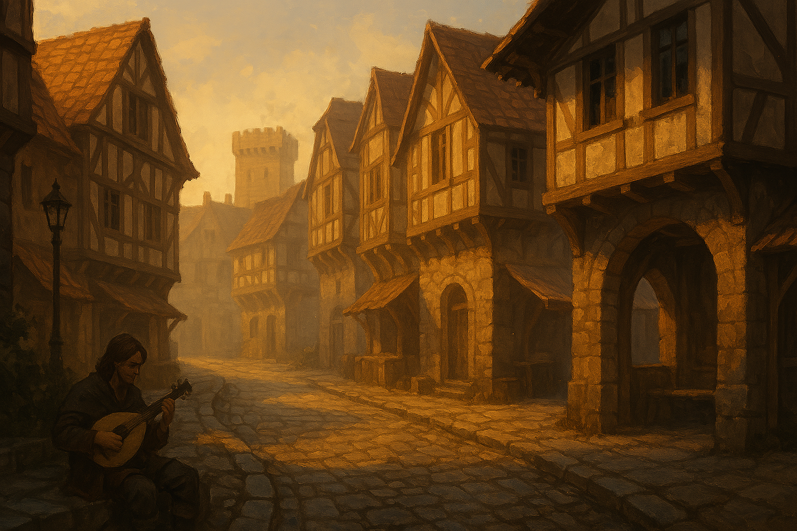

Chapter 2: Detour to Macksohn
Hand of the Lich


Hand of the Lich
15050.11.19
天終於亮了。冒險者們看見原本一樓空無一人的櫃檯後，默默冒出了昨天看見的老婦人，而且他是真實存在有肉體的人。
在冒險者詢問後，發現老婦人生存的年代不太合理，據他所說，巴納沃二世剛上任不久。喜利・噢喜力想起前一晚和路人問到的，如果50年前這棟旅社便歇業了，那也許這名老婦人便是從那時被封存到現在，不斷重複播放的一段回憶。同時老婦人表示這間旅社叫門羅公寓，是他的家族歷代經營的。樓上的火也是。在快天亮時，樓上的火已經熄滅了，冒險者們也發現，縱使他們沒看見一樓被火勢燒到，牆面上卻都留有火燒的痕跡。
和老婦人詢問起樓上莫名的樓層，老婦人表示這間旅社只有兩層樓而已。在冒險者們的帶領下，老婦人跟著大家走到二樓，卻看不見通往「三樓」的樓梯，在他面前的僅僅是一到堅實的牆。儘管冒險者們在他面前走上這樓梯，他仍然無法跨越這面牆。
不久後，冒險者們和老婦人道別，離開門羅公寓，決定回舊旅店和YHWH和英荻格會合。
YHWH看見英荻格還在熟睡叫不醒，自己先收拾好行李，來到旅店外的馬廄等待其他人到來。與大家會合後，薩梅爾和米多莉一起到樓上叫英荻格下來，大家便出發前往麥克嵩。
冒險者們在日落左右抵達了麥克嵩，城門口的衛兵似乎也對他們沒有特別阻攔，因此大家很順利的就進去了。薩梅爾看見城門旁之前光顧過賣馬的店已經休息了，提議隔天早上再去買馬。
大家決定先去熟悉的城門旅店住宿，然後再討論今晚是否還有其他行動。同時，波也和米多莉表示有話想和他私下說。
來到城門旅店，兩年不見的凱文見到米多莉，立刻張大了雙眼。在米多莉的談判下，他們住進了三樓的通鋪房，凱文也答應為他們準備晚餐。米多莉和波在樓下討論事情，其他人則先上樓放行李，順便等凱文備餐。凱文不經意間聽到波喊米多莉媽媽，讓他十分心碎。波也和米多莉提起，希望等等有機會能回他以前在麥克嵩的家去看看。
半小時後，已回到樓上房間的米多莉和波以及其他人一併來到樓下，凱文已準備好晚餐，讓大家分兩桌坐。大家狼吞虎嚥一番後，決定兵分兩路：米多莉和喜利・噢喜力一起陪波回他老家，薩梅爾、龍恩和YHWH則想去王宮圖書館找資料，英荻格則待在房間休息。
波的老家就在舊城區，三人花了不久時間就到了。看起來破損的家，門一推就開。波走入了他的舊臥室，翻找了一下，拿起一個小女生造型的娃娃，緊緊抱在懷裡，然後便將娃娃放進背包，示意米多莉和喜利・噢喜力可以走了。喜利・噢喜力對這個房子有點興趣，但裡面實在是太破舊了，也看不出任何有用的東西。
離開波的老家後，三人決定前往月先生的辦公室。米多莉記得當時月先生曾告訴他們，下次他們回麥克嵩時，他很有可能已經不在人世間了，但他還是想去碰個運氣。派頓事務所的門沒有鎖，三人輕鬆地便推開了。波在月先生的辦公桌上看見一張字跡已斑駁的信，遞給了米多莉。這似乎是封道別信，月先生最後的署名是在15048年。米多莉好好將這封信收在自己的背包內。米多莉請喜利・噢喜力協助將月先生上鎖的抽屜打開，但在轉動的過程中，鎖被破壞掉了打不開，幸好鑰匙沒有損壞。波見狀直接用拳頭用力一拳，木製的抽屜便破開了。米多莉拉開抽屜，看見裡面放了一疊二十來張的月先生名片，和當時薩梅爾拿到的名片看起來一樣。在好奇心之下，喜利・噢喜力嘗試點了名片三下，這次他並沒有如薩梅爾當時一樣被傳送到哪裡去，但名片卻開始不斷震動。大家不清楚到底發生什麼事了，但在米多莉的測試下，他在名片上點了三下後，瞬間傳送到了喜利・噢喜力的身邊，現場三人都感到驚喜。離開前，米多莉也想起自己似乎有一套禮服放在這裡的更衣間內。打開門，他看見那套禮服還好好的被保存，他也就將禮服收好放在背包內，接著三人便離去了。
三人決定去王宮花園碰碰運氣，卻發現王宮花園此刻入口已關了起來，有兩名衛兵站在門口。米多莉和衛兵詢問了是否最近有看到蘿琳？衛兵表示他通常早上都會在花園散步，可以一早來看看，但此刻花園入口已經關了，不讓他們進去。三人決定先回城門旅店休息。
吃完晚餐後，龍恩、薩梅爾和YHWH決定先去王宮圖書館。依照記憶，三人先前往王宮花園的入口，但是在衛兵的說明下，雖然圖書館還開著，但他們唯一能走的王宮花園入口現在不能開放進入，因此最早也是明天早上才能來一趟。
薩梅爾想起之前在花園前廣場的攤販，急忙跑去找了以前吃過的沙威瑪攤位，剛好買到了最後一份，熟悉的香味讓他感到滿足。
三人決定去之前發現拉索斯教集會場地的地下道探索，於是他們決定從當初燒毀的崔尼斯劇院進入。崔尼斯劇院現在已經停止營業，改造成了劇院遺址，看起來早上有在收費讓人進入參觀。三人趁著沒人管理時鑽了進去，從當時逃出來，通往地下的入口走下去。YHWH決定在外面等待，薩梅爾和龍恩兩人自己到了地下道。小心避開陷阱，兩人聽見了地下道似乎傳來了動物的低鳴聲，那聲音讓他們回想起了拉茲特獸。
繞道了當時的拉索斯教集會所，裏面是一片廢墟，被燒毀的櫥櫃完全沒有修復，地上也已經沒有神秘的粉末了。眼看沒有特別的收穫，兩人決定去之前看見有關著拉茲特獸的小柵欄看看。柵欄內有兩隻成體的拉茲特獸，除此之外，在他們前面，還有一個人的屍體。龍恩仔細一看，這個人似乎只是昏迷，沒有死去。懷疑著拉茲特獸是否是肉食性的，薩梅爾打開了一個肉罐頭，湊到拉茲特獸面前，但他們毫無反應。此時，兩人聽見地下道遠處傳來了腳步聲，兩人趕緊躲到一旁。遠處走來了兩個身穿黑袍的拉索斯教徒，停在柵欄前。其中一名教徒提及，看起來「那個人」不夠格加入拉索斯教，接著便拿出匕首，將倒臥在拉茲特獸面前的昏迷的人割開喉嚨，然後兩人便回頭走了。薩梅爾和龍恩對於剛剛看見的事感到訝異，但也沒辦法做任何事。在離開前，薩梅爾聽見了一聲極小聲地拉茲特獸叫聲，從兩隻成體拉茲特獸身後傳來，他趕緊爬到柵欄後，發現有一隻小隻的拉茲特獸，於是他便將小拉茲特獸抱走，決定佔為己有。
兩人決定往當時可以通往地下道的布拉克房間洞口走去。當年的洞沒有被填補起來，而且上方是暗的，於是兩人一小拉茲特獸（還有酷爆）便從地下道爬了上來。布拉克的房間看起來也沒有被動過的痕跡，讓人意外的是，他家客廳看起來也很久沒有活動的痕跡了，布拉克的父母很有可能也不住在這了。接著薩梅爾和龍恩便決定直接從這裡回旅店去了。
等了一兩個小時，YHWH一直沒有等到薩梅爾和龍恩，於是他決定自己離開了。YHWH記得怎麼從舊城區或麥克嵩的城門走回城門旅店，但他不記得怎麼從文創區走回那裡。東張西望想找人詢問的他，意外的看見了一個他們在尋找的人—蘿琳。和蘿琳熱情的打招呼，YHWH看見的卻是一個看起來空洞的蘿琳，擺出僵硬的微笑，不帶感情地回應他，就連YHWH和他提起龍恩，蘿琳也像是聽到普通人一樣，沒有當初如少女般的反應。YHWH感到極度懷疑，卻也沒能發現蘿琳身上有任何魔法的痕跡。蘿琳表示自己要去買點東西，詢問YHWH要不要一起跟上？YHWH婉拒，但向蘿琳詢問了回到城門旅店的方向。蘿琳也表示他明天一早再去城門旅店找他們。說完後，他便晃著晃著走去了前方的雜貨店。YHWH小心跟蹤著，看見蘿琳離開店舖時手上多了個袋子，但也看不出是買什麼東西。尾隨蘿琳一路到王宮花園，看著蘿琳和衛兵點頭致意後走入花園內，接著無法進入花園的YHWH便跟丟了。
等到眾人回到城門旅店，YHWH問了凱文上一次見到蘿琳是什麼時候？凱文表示幾個月前都還有見到他，但上次說話已經是快要兩年前了。YHWH和冒險者們說明剛剛自己看到的狀況，也和大家商量是否今晚要換地方過夜，最後大家決定今晚還是在這裡過夜，但安排個守夜比較保險。
米多莉也和大家分享了剛剛在派頓事務所拿到的月先生道別信。大家討論著月先生是否不在這個世界上了，但也不知從何確認起。同時，米多莉也拿出月先生的一疊名片。大家測試著名片的功能，先從薩梅爾帶回來的小拉茲特獸—此時已被他命名為「慢爆」，酷爆的弟弟—開始。被慢爆點過的名片，似乎直接壞掉了，沒辦法正常運作。接著，大家嘗試用已經睡著的英荻格的手指頭點，發現可以正常發揮效果。
原本通往大學城和方努爾市的遙遠路程，也許有了不同的規劃。
15050.11.20
夜晚，大家輪流守夜，以免發生了任何突發事件。接近日出時，樓下似乎傳出了些動靜，喜利・噢喜力悄悄走到樓梯上觀看，發現是凱文正在忙進忙出，也就放心地回房間去了。
不久後，樓下傳來了與剛才凱文不同的聲響，這次換薩梅爾下樓去。走到拐往一樓的轉角，一個身影直挺挺地站在樓梯間，背後的光線亮到薩梅爾沒能看清楚這個成年女性是誰，但他的腦中冒出了蘿琳的名字。薩梅爾趕緊衝回房間去，背後傳來的腳步聲緩慢、穩定而沈重。薩梅爾趕緊叫醒大家，並將門關上。不久後，重重的敲門聲響起。
在大家不知道該怎麼辦時，最終是英荻格將門打了開來。波站在門邊以防任何突發事件，而龍恩則在窗戶邊，隨時可逃離。蘿琳僵硬地走入了房間，面露不自然的微笑，直直地朝著窗邊的龍恩走去，龍恩見狀，直接跳出窗外，拔腿就跑。
眾人在房間內保持警戒，卻又面面相覷。蘿琳失去了目標，似乎一時不知該往哪裡走。他留下了一句，請大家告訴龍恩「他要的東西在大學城」。大家打量著蘿琳，很明顯的，他和過去大家所認識的蘿琳有挺大的差異。手一碰，這才發現蘿琳身上的肌膚竟然成了陶瓷。他似乎成了一尊陶瓷娃娃。
大家決定留下還在熟睡中的YHWH，下樓去先用餐，同時試探看看蘿琳發生了什麼事。蘿琳像一般人類一樣，能正常的進食，讓大家有些驚訝，但從他身上似乎也得不到什麼有用的資訊。
另一頭，龍恩跑到了當初熟悉的日昇酒館。那裡的門鎖壞了，輕鬆就能進去。裡面十分陳舊，什麼食物都不剩。龍恩想起當時聽說的日昇酒館的二樓，便索性試探看看到底日昇酒館有沒有二樓，卻怎麼探索，看起來都只有一樓。
大家在旅店一樓一邊討論著接下來的計畫，一邊用餐，也一邊偷偷觀察蘿琳。一段時間後，蘿琳起身回到樓上房間。大家一開始也沒多想，直到突然想起YHWH還在樓上休息，米多莉和喜利・噢喜力便趕緊上樓去。
房間內，YHWH深睡著，而蘿琳正趴在他身邊，朝著他的耳朵講著一連串大家聽不懂的語言。喜利・噢喜力趕緊把他拉開，蘿琳雖然僵硬，但也沒多反抗。兩人把YHWH叫醒，他看起來也沒有特別有異狀，大家也才放了心。
大家下樓後，不久後龍恩也離開日昇酒館，在外面吃完東西回來了。大家決定還是要先離開旅店，準備接下來的旅程，但是對於如何處置蘿琳，還沒有個頭緒。米多莉用他的小馬和YHWH先前往日昇酒館去，龍恩跟著跑在後面，薩梅爾和爵士則跟在後頭，英荻格則陪在蘿琳身邊。隨著米多莉、YHWH和龍恩走遠，薩梅爾、喜利・噢喜力和波決定要想辦法甩開蘿琳，回去城門旅店將忘記帶出來的慢爆帶出來。蘿琳似乎注意到了，而英荻格則在接收到薩梅爾的暗示後，想辦法支開話題，吸引蘿琳的注意力。
薩梅爾、喜利・噢喜力和波三人從城門旅店房間將慢爆帶出來後，與米多莉、龍恩與YHWH一同在城門口集合。大家討論著離開麥克嵩的計畫，以及該買多少馬。研究著月先生的名片，薩梅爾等人瞬間移動到了英荻格身邊，他們發現英荻格和蘿琳正在王宮花園前的廣場談天，英荻格看見大家，請了大家吃他買的沙威瑪，也偷偷告訴薩梅爾，他會好好照顧蘿琳，要他們不用擔心。
回到城門口，一行人決定去一趟王宮圖書館，YHWH想查清楚他從「蘿琳」口中聽到的話：蘿琳的異常，似乎和月神有些關係。靠著YHWH的學者證，大家順利進入了圖書館，分頭尋找關於月神教、拉索斯教、拉茲特獸、大學城等資訊，也查閱了一下近一年內麥克嵩是否有發生什麼大事。根據YHWH找到的結果，月神除了芬尼爾外，似乎還有個「芬諾爾」，就像這裡的月亮有兩顆一樣。這位芬諾爾似乎常常被稱為「交易之神」，但他總會在資訊不對等的前提下，在交易中賺到些小便宜。
查完了想要的資訊，大家回頭到城門口，到之前造訪過的凱瑞車行買馬。在老闆的帶領下，大家挑選了兩匹馬：偉大的西澤和麥可（隨後被大家重新取名為偉大的披薩和蜜雪兒）。老闆也附上了兩匹馬各一週的糧草送給大家。搭配著米多莉召喚出的小馬，六名冒險者與三匹馬，就這樣離開了麥克嵩。
15050.11.19
It's finally dawn. The adventurers saw that the old woman they saw yesterday appeared silently behind the empty counter on the first floor, and she was a real person with a physical body.
After the adventurer inquired, he found that the age of the old woman's existence was unreasonable. According to him, King Benevol II had just taken office not long ago. Siri recalled what she had asked passers-by the night before. If this hotel had closed down 50 years ago, then maybe this old woman was a memory that had been sealed from then on and played over and over again. At the same time, the old woman said that this hotel is called Monroe’s Flat and has been run by his family for generations. So was the fire upstairs. When it was almost dawn, the fire upstairs had been extinguished, and the adventurers also discovered that even though they did not see the first floor being burned by the fire, there were traces of fire on the walls.
I asked the old woman about the inexplicable floor upstairs, and the old woman said that the hotel only had two floors. Under the leadership of the adventurers, the old woman followed everyone to the second floor, but could not see the stairs leading to the "third floor". What was in front of him was just a solid wall. Although the adventurers ascended the stairs before him, he could not cross the wall.
Soon after, the adventurers said goodbye to the old woman, left Monroe’s Flat, and decided to go back to the old inn to meet up with YHWH and Indigo.
YHWH saw that Indigo was still asleep and couldn't wake up. He packed his luggage and went to the restaurant outside the hotel to wait for others to arrive. After meeting everyone, Samael and Midori went upstairs together to ask Indigo to come down, and everyone set off for Macksohn.
The adventurers arrived at Macksohn around sunset. The guards at the city gate did not seem to particularly hinder them, so everyone entered smoothly. Samael saw that the horse-selling shop next to the city gate that he had visited before had taken a break, so he suggested buying horses again the next morning.
Everyone decided to stay at the familiar Gate’s Inn first, and then discuss whether there was any other action tonight. At the same time, Beau also expressed to Midori that he wanted to talk to him privately.
Arriving at the Gate’s Inn, Kevin, who had not seen him for two years, immediately opened his eyes when he saw Midori. After Midori negotiation, they moved into a bunk room on the third floor, and Kevin also agreed to prepare dinner for them. Midori and Beau were discussing things downstairs, while the others went upstairs to put their luggage and wait for Kevin to prepare food. Kevin overhears Beau calling Midori mom, which breaks his heart. Beau also mentioned it to Midori, hoping to go back to his former home in Macksohn when he has the opportunity.
Half an hour later, Midori and Beau, who had returned to the room upstairs, and others came downstairs. Kevin had prepared dinner and asked everyone to sit at two tables. After everyone devoured the food, they decided to split into two groups: Midori and Siri would accompany Beau back to his hometown, Samael, Ron and YHWH wanted to go to the palace library to look for information, while Indigo would stay in the room to rest.
Beau's hometown is in the old city, and it took the three of them a short time to get there. The door of a house that looks damaged opens as soon as it is pushed. Beau walked into his old bedroom, rummaged around, picked up a doll in the shape of a little girl, held it tightly in his arms, and then put the doll into his backpack, signaling to Midori and Siri that they could leave. Siri was somewhat interested in the house, but it was too shabby and there was nothing useful inside.
After leaving Beau's hometown, the three decided to go to Mr. Moon's office. Midori remembers that Mr. Moon told them that the next time they went back to Macksohn, he would probably no longer be alive, but he still wanted to try his luck. The door of Patton’s was unlocked, and the three of them pushed it open easily. Beau saw a letter with mottled handwriting on Mr. Moon's desk and handed it to Midori. This appears to be a farewell letter, Mr. Moon was last signed in 15048. Midori Keep this letter in your backpack. Midori asked Siri to help open the locked drawer of Mr. Moon, but during the turning process, the lock was damaged and could not be opened. Fortunately, the key of Kaname was not damaged. Beau saw this and punched hard with his fist, causing the wooden drawer to break open. Midori opened the drawer and saw a stack of about twenty Mr. Moon business cards inside, which looked the same as the business cards Samael got at that time. Out of curiosity, Siri tried clicking the business card three times. This time he was not sent anywhere like Samael was, but the business card began to vibrate continuously. No one knew what happened, but under Midori's test, he clicked three times on the business card and was instantly teleported to Siri. The three people present were pleasantly surprised. Before leaving, Midori also remembered that he seemed to have a dress in the dressing room here. Opening the door, he saw that the dress was still well preserved, so he put the dress away in his backpack, and then the three of them left.
The three decided to try their luck in the palace garden, but found that the entrance to the palace garden was closed and there were two guards standing at the door. Midori asked the guard if he had seen Roline recently? The guard said that he usually took a walk in the garden in the morning and could come and take a look early in the morning, but at the moment the entrance to the garden was closed and they were not allowed to enter. The three decided to go back to the Gate’s Inn to rest.
After dinner, Ron, Samael and YHWH decided to go to the palace library first. According to their memory, the three of them went to the entrance of the palace garden first. However, according to the guards' explanation, although the library was still open, the only entrance to the palace garden that they could access was not open to enter now, so they could only go there tomorrow morning at the earliest.
Samael Remembering the vendors in the square in front of the garden, he hurriedly ran to the shawarma stall where he had eaten before, and happened to buy the last one. The familiar aroma made him feel satisfied.
The three decided to explore the underground tunnel where they had previously discovered the gathering place of the Rathos Cult, so they decided to enter through the burned-down Trinis Theater. The Trinis Theater is now closed and has been transformed into a theater ruins. It seems that there is a fee for admission in the morning. The three of them got in when no one was in charge, escaped from that moment, and walked down the entrance to the underground. YHWH decided to wait outside, and Samael and Ron went to the underground tunnel by themselves. Carefully avoiding the trap, the two heard the low sounds of animals that seemed to come from the underground tunnel, and the sound reminded them of Razitmon.
We took a detour to the Rassos religious assembly hall at that time, which was in ruins. The burnt cabinets had not been repaired at all, and there was no mysterious powder on the ground. Seeing that there was no special gain, the two decided to check out the small fence where they had seen the Razite beast. There were two adult Razit beasts inside the fence. In addition, in front of them, there was a human body. Ron Upon closer inspection, this person seemed to be unconscious, not dead. Doubting whether Razitmon was carnivorous, Samael opened a meat can and approached the Razitmon, but there was no reaction from them. At this time, the two heard footsteps coming from far away in the underground tunnel, and they quickly hid aside. Two Lathos believers in black robes walked from a distance and stopped in front of the fence. One of the cultists mentioned that it seemed that "that person" was not qualified to join the Rathos Cult, then he took out a dagger and slit the throat of the unconscious man lying in front of the Razite Beast, and then the two of them turned back and left. Samael and Ron were surprised by what they just saw, but couldn't do anything. Before leaving, Samael heard a very quiet cry of Razit, coming from behind two adult Razit. He quickly climbed behind the fence and found a small Razit, so he took the little Razit away and decided to take it as his own.
The two decided to go to the entrance of room Brock, which at that time led to the underground passage. The hole had not been filled, and it was dark above, so the two of them and a small Razitemon (and Kubao) climbed up from the underground tunnel. Brock's room doesn't seem to have been touched. Surprisingly, his living room also looks like there hasn't been any trace of activity for a long time. Brock's parents probably don't live here anymore. Then Samael and Ron decided to go back to the hotel directly from here.
After waiting for an hour or two, YHWH did not wait for Samael and Ron, so he decided to leave by himself. YHWH remembers how to walk back to the Gate’s Inn from the Old Town or Macksohn’s city gate, but he doesn’t remember how to walk back there from the Cultural and Creative District. Looking around for someone to ask, he unexpectedly saw the person they were looking for—Roline. Greeting Roline warmly, YHWH saw an empty-looking Roline, putting on a stiff smile and responding to him without emotion. Even when YHWH mentioned Ron to him, Roline seemed to hear it like an ordinary person, without the girlish reaction. YHWH felt extremely suspicious, but could not find any traces of magic on Roline. Roline said that he was going to buy something and asked YHWH if he wanted to follow him? YHWH declined, but asked Roline for directions back to the Gate’s Inn. Roline also said that he would go to the Gate’s Inn to find them early tomorrow morning. After saying that, he wandered to the grocery store ahead. YHWH followed carefully and saw that Roline had a bag in her hand when she left the store, but she couldn't tell what she was buying. Following Roline all the way to the palace garden, he watched Roline nod with the guards and walked into the garden. Then YHWH, who was unable to enter the garden, lost track of him.
When everyone returned to Gate’s Inn, YHWH asked Kevin when was the last time he saw Roline? Kevin said he saw him a few months ago, but the last time he spoke was almost two years ago. YHWH explained to the adventurers what he had just seen, and discussed with everyone whether they should change places to spend the night tonight. In the end, everyone decided to stay here tonight, but it would be safer to arrange a vigil.
Midori also shared with you the Mr. Moon farewell letter that he just received from Patton’s. Everyone is discussing whether Mr. Moon is no longer in this world, but they don't know how to confirm it. At the same time, Midori also took out a stack of business cards from Mr. Moon. Everyone tested the functions of the famous film, starting with the little Razite brought back by Samael - now named "Manbao" by him, the younger brother of Kubao. The business card clicked by Manbao seems to be directly broken and cannot function normally. Then, everyone tried to tap with the fingers of Indigo who was already asleep, and found that the effect worked normally.
The originally long journey to Great Citadel and Fannur cities may have been planned differently.
15050.11.20
At night, everyone takes turns to keep vigil to avoid any emergencies. Near sunrise, there seemed to be some movement downstairs. Siri quietly walked to the stairs to watch and found that Kevin was busy coming in and out, so he went back to the room with confidence.
Soon after, there was a different sound from downstairs. Kevin went downstairs instead of Samael. When he turned the corner to the first floor, he saw a figure standing upright in the stairwell. The light behind him was so bright that Samael could not clearly see who the adult woman was, but Roline's name popped into his mind. Samael rushed back to the room, the footsteps coming from behind were slow, steady and heavy. Samael Wake everyone up quickly and close the door. Not long after, there was a heavy knock on the door.
When everyone didn't know what to do, it was Indigo who finally opened the door. Beau is standing by the door in case of any emergency, while Ron is by the window, ready to escape. Roline walked stiffly into the room, with an unnatural smile on his face, and walked straight towards Ron by the window. Seeing this, Ron jumped out of the window and ran away.
Everyone remained alert in the room, but looked at each other in shock. Roline lost her focus and seemed to have no idea where to go. He left a message, asking everyone to tell Ron "What he wants is in Great Citadel". Everyone looked at Roline, and it was obvious that he was quite different from the Roline everyone knew in the past. When he touched it with his hand, he realized that the skin on Roline's body had turned into ceramic. He seemed to be a porcelain doll.
Everyone decided to leave YHWH, who was still sleeping, and go downstairs to eat first while trying to see what happened to Roline. Roline was able to eat normally like ordinary humans, which surprised everyone, but it seemed that no useful information could be obtained from him.
On the other end, Ron ran to the familiar Sunrise. The door lock there is broken, so it's easy to get in. It was very old inside and there was no food left. Ron Remembering what I heard about the second floor of Sunrise, I simply tried to see if Sunrise had a second floor. However, no matter how I explored, it seemed that there was only the first floor.
Everyone was discussing the next plan on the first floor of the hotel, eating, and secretly observing Roline. After some time, Roline got up and went back to the room upstairs. Everyone didn't think much about it at first, until they suddenly remembered that YHWH was still resting upstairs, so Midori and Siri hurried upstairs.
In the room, YHWH was sleeping deeply, and Roline was lying next to him, speaking a series of incomprehensible languages into his ears. Siri quickly pulled him away. Although Roline stiffened, she didn't resist much. The two of them woke up YHWH, and he didn't look particularly strange, so everyone felt relieved.
After everyone went downstairs, Ron also left Sunrise soon after, and came back after eating outside. Everyone decided to leave the hotel first and prepare for the next journey, but they still had no idea what to do with Roline. Midori went to Sunrise first with his pony and YHWH, Ron ran behind, Samael and Sir followed, and Indigo stayed with Roline. As Midori, YHWH and Ron walked away, Samael, Siri and Beau decided to find a way to get rid of Roline and went back to Gate’s Inn to bring out Manbao who had forgotten to bring it out. Roline seemed to notice, and Indigo, after receiving Samael's hint, tried to change the subject and attract Roline's attention.
After Samael, Siri and Beau took Manbao out of the Gate’s Inn room, they gathered at the city gate with Midori, Ron and YHWH. Everyone discussed their plans to leave Macksohn and how many horses they should buy. Studying Mr. Moon's business card, Samael and others teleported to Indigo. They found Indigo and Roline chatting in the square in front of the palace garden. Indigo saw everyone and invited them to eat shawarma he bought. He also secretly told Samael that he would take good care of Roline and asked them not to worry.
Back at the gate of the city, the group decided to go to the palace library. YHWH wanted to find out what he heard from "Roline": Roline's abnormality seemed to have something to do with the moon god. Relying on YHWH's scholar certificate, everyone successfully entered the library, and separately searched for information about the Luna Cult, Rathos Cult, Razite Beast, Great Citadel, etc., and also checked whether any major events had happened in Macksohn in the past year. According to the results found by YHWH, in addition to Phynoir, the moon god seems to have a "Fenol", just like there are two moons here. This Fennol seems to be often called the "God of Trading", but he always makes some small gains in transactions under the premise of unequal information.
After checking the information they wanted, everyone went back to the city gate and bought horses at Kerry’s, which they had visited before. Under the leadership of the boss, everyone selected two horses: Seizure the Great and Michael (later renamed Pizza the Great and Michelle). The boss also included a week's worth of food and fodder for each of the two horses. Together with the ponies summoned by Midori, six adventurers and three horses left Macksohn.